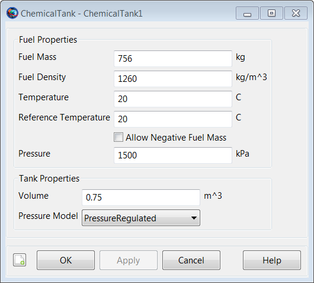
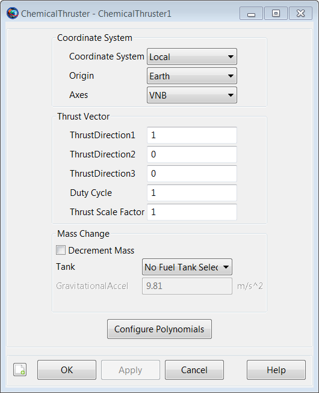
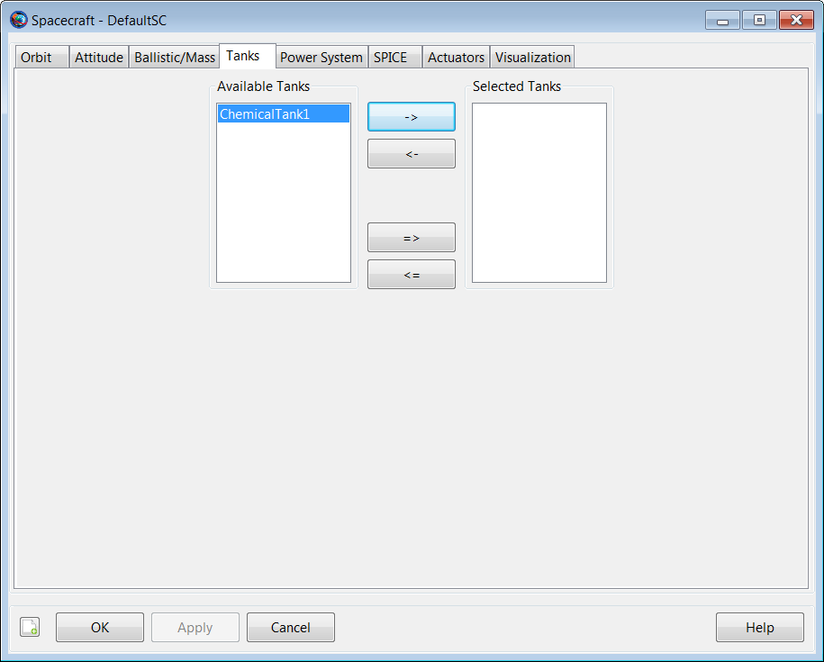
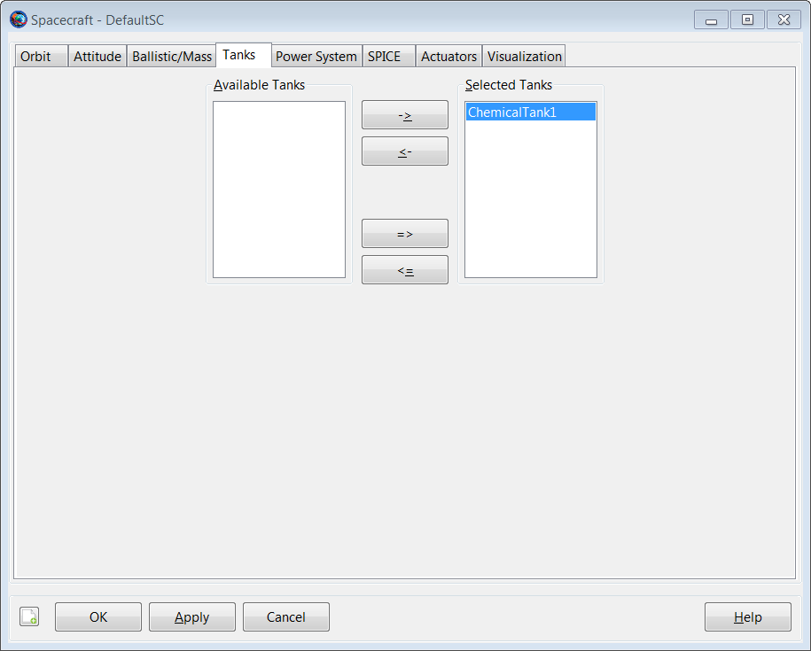
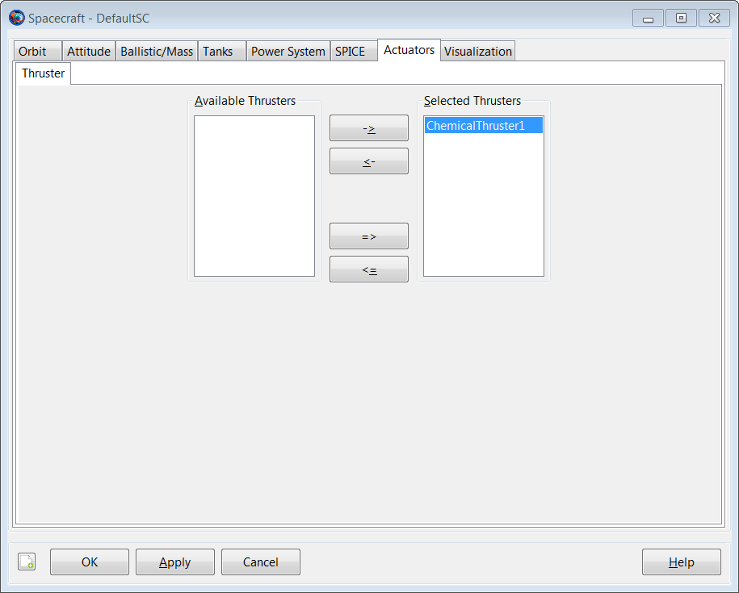

ChemicalTank
ChemicalTank — Model of a chemical fuel tank
Description
A ChemicalTank is a thermodynamic model of a tank and is required for finite burn modeling or for impulsive burns that use mass depletion. The thermodynamic properties of the tank are modeled using Boyle’s law and assume that there is no temperature change in the tank as fuel is depleted. To use a ChemicalTank, you must first create the tank, and then attach it to the desired Spacecraft and associate it with a ChemicalThruster as shown in the example below.
See Also ImpulsiveBurn,ChemicalThruster
Fields
| Field | Description | ||||||||||||
|---|---|---|---|---|---|---|---|---|---|---|---|---|---|
| AllowNegativeFuelMass | This field allows the ChemicalTank to have negative fuel mass which can be useful in optimization and targeting sequences before convergence has occurred. This field cannot be modified in the Mission Sequence.
| ||||||||||||
| FuelDensity | The density of the fuel.
| ||||||||||||
| FuelMass | The mass of fuel in the tank.
| ||||||||||||
| Pressure | The pressure in the tank.
| ||||||||||||
| PressureModel | The pressure model describes how pressure in the ChemicalTank changes as fuel is depleted. This field cannot be modified in the Mission Sequence.
| ||||||||||||
| RefTemperature | The temperature of the tank when fuel was loaded.
| ||||||||||||
| Temperature | The temperature of the fuel and ullage in the tank. GMAT currently assumes ullage and fuel are always at the same temperature.
| ||||||||||||
| Volume | The volume of the tank. GMAT checks to ensure that the input volume of the tank is larger than the calculated volume of fuel loaded in the tank and throws an exception in the case that the calculated fuel volume is larger than the input tank volume.
|
GUI
The ChemicalTank dialog box allows you to specify properties of a fuel tank including fuel mass, density, and temperature as well as tank pressure and volume. The layout of the ChemicalTank dialog box is shown below.
|  |
The ChemicalThruster resource is closely related to the ChemicalTank resource and thus, we also discuss it here. The ChemicalThruster dialog box allows you to specify properties of a thruster including the coordinate system of the Thrust acceleration direction vector, the thrust magnitude and Isp. The layout of the ChemicalThruster dialog box is shown below.
|  |
When performing a finite burn, you will typically want to model fuel depletion. To do this, select the button and then select the previously created ChemicalTank as shown below.
 |
Thus far, we have created both a ChemicalTank and a ChemicalThruster, and we have associated a ChemicalTank with our ChemicalThruster. We are not done yet. We must tell GMAT that we want to attach both the and the ChemicalThruster to a particular spacecraft. To do this, double click on the desired spacecraft under the Spacecraft resource to bring up the associated GUI panel. Then click on the tab to bring up the following GUI display.
|  |
Next, select the desired ChemicalTank and use the right arrow button to attach the ChemicalTank to the spacecraft. Then, click the button as shown below.
|  |
Similarly, to attach a ChemicalThruster to a spacecraft, double click on the desired spacecraft under the Spacecraft resource and then select the Actuators tab. Then select the desired thruster and use the right arrow to attach the thruster to the spacecraft. Finally, click the button as shown below.
|  |
Remarks
Use of ChemicalTank Resource in Conjunction with Maneuvers
A ChemicalTank is used in conjunction with both impulsive and finite maneuvers. To implement an impulsive maneuver, one must first create an ImpulsiveBurn resource and (optionally) associate a ChemicalTank with it. The actual impulsive maneuver is implemented using the Maneuver command. See the Maneuver command documentation for worked examples on how the ChemicalTank resource is used in conjunction with impulsive maneuvers.
To implement a finite maneuver, you must first create both a ChemicalThruster and a FiniteBurn resource. You must also associate a ChemicalTank with the ChemicalThruster resource and you must associate a Thruster with the FiniteBurn resource. The actual finite maneuver is implemented using the BeginFiniteBurn/EndFiniteBurn commands. See the BeginFiniteBurn/EndFiniteBurn command documentation for worked examples on how the ChemicalTank resource is used in conjunction with finite maneuvers.
Behavior When Configuring Tank and Attached Tank Properties
Create a default ChemicalTank and attach it to a Spacecraft and ChemicalThruster.
% Create the ChemicalTank Resource
Create ChemicalTank aTank
aTank.AllowNegativeFuelMass = false
aTank.FuelMass = 756
aTank.Pressure = 1500
aTank.Temperature = 20
aTank.RefTemperature = 20
aTank.Volume = 0.75
aTank.FuelDensity = 1260
aTank.PressureModel = PressureRegulated
% Create a ChemicalThruster and assign it a ChemicalTank
Create ChemicalThruster aThruster
aThruster.Tank = {aTank}
% Add the ChemicalTank and ChemicalThruster to a Spacecraft
Create Spacecraft aSpacecraft
aSpacecraft.Tanks = {aTank}
aSpacecraft.Thrusters = {aThruster} As exhibited below, there are some subtleties associated with
setting and getting parent vs. cloned resources. In the example above,
aTank is the parent ChemicalTank
resource and the field aSpacecraft.Tanks is populated
with a cloned copy of aTank.
Create a second spacecraft and attach a fuel tank using the same
procedure used in the previous example. Set the
FuelMass in the parent resource,
aTank, to 900 kg.
% Add the ChemicalTank and ChemicalThruster to a second Spacecraft
Create Spacecraft bSpacecraft
bSpacecraft.Tanks = {aTank}
bSpacecraft.Thrusters = {aThruster}
aTank.FuelMass = 900 %Can be performed in both resource and
%command modesNote that, in the example above, setting the value of the parent
resource, aTank, changes the fuel mass value in both
cloned fuel tank resources. More specifically, the value of both
aSpacecraft.aTank.FuelMass and
bSpacecraft.aTank.FuelMass are both now equal to the
new value of 900 kg. We note that the assignment command for the parent
resource, aTank.FuelMass, can be performed in both
resource and command modes.
To change the value of the fuel mass in only the first created spacecraft, aSpacecraft, we do the following.
% Create the Fuel Tank Resource
aTank.FuelMass = 756 %Fuel tank mass in both s/c set back to default
aSpacecraft.aTank.FuelMass = 1000 %Can only be performed in command mode. As a result of the commands in the previous example, the value of
aSpacecraft.aTank.FuelMass is 1000
kg and the value of bSpacecraft.aTank.FuelMass is 756
kg. We note that the assignment command for the cloned resource,
aSpacecraft.aTank.FuelMass, can only be performed in
command mode.
Caution: Value of AllowNegativeFuelMass Flag Can Affect Iterative Processes
By default, GMAT will not allow the fuel mass to be negative. However, occasionally in iterative processes such as targeting, a solver will try values of a maneuver parameter that result in total fuel depletion. Using the default tank settings, this will throw an exception stopping the run unless you set the AllowNegativeFuelMass flag to true. GMAT will not allow the the total spacecraft mass to be negative. If DryMass + FuelMass is negative GMAT will throw an exception and stop.
Examples
Create a default ChemicalTank and attach it to a Spacecraft and ChemicalThruster.
% Create the Fuel Tank Resource
Create ChemicalTank aTank
aTank.AllowNegativeFuelMass = false
aTank.FuelMass = 756
aTank.Pressure = 1500
aTank.Temperature = 20
aTank.RefTemperature = 20
aTank.Volume = 0.75
aTank.FuelDensity = 1260
aTank.PressureModel = PressureRegulated
% Create a ChemicalThruster and assign it a ChemicalTank
Create ChemicalThruster aThruster
aThruster.Tank = {aTank}
% Add the ChemicalTank and ChemicalThruster to a Spacecraft
Create Spacecraft aSpacecraft
aSpacecraft.Tanks = {aTank}
aSpacecraft.Thrusters = {aThruster}
BeginMissionSequence